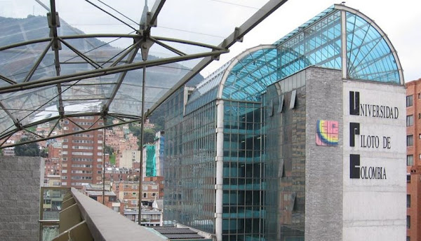

Bienvenido al sistema de reservas de laboratorios de la Universidad Piloto de Colombia


En esta plataforma podrás llevar a cabo las reservas de los laboratorios de la universidad junto con el inventario.
Iniciar Sesión Registrate Aquí